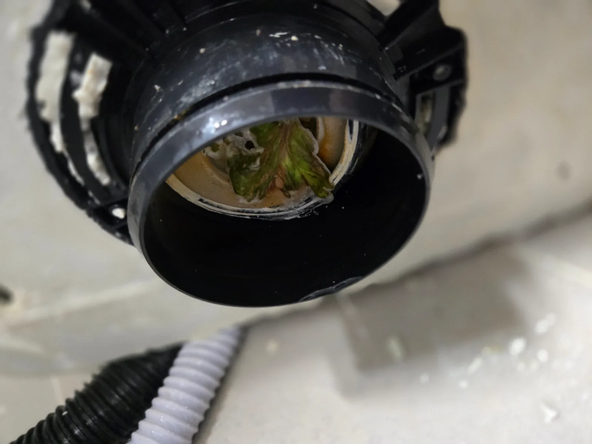

강남구 논현동 변기막힘, 현장 도착 후 진단
강남구 논현동 변기막힘 신고를 받고 원룸 화장실 현장에 방문했습니다. 변기 내부에는 물이 그대로 고여 있었으며 시간이 지나도 수위가 매우 조금씩만 내려가는 심한 막힘 상태였습니다. 현장 증상을 확인한 결과 일반적인 휴지나 오염물로 인한 가벼운 막힘이 아니라, 변기 내부 또는 하부 배관에 다량의 이물질이 단단하게 걸려 배수 통로를 막고 있을 가능성이 높았습니다. 고객님께 현재 상태와 예상되는 원인을 설명드린 뒤 정확한 원인 제거를 위해 변기 탈거 작업을 진행하기로 했습니다.
1단계: 증상 확인과 필요한 장비 작업
화장실 바닥과 변기 주변이 오염되지 않도록 작업 공간을 정리한 뒤 변기와 연결된 부속을 안전하게 분리했습니다. 변기를 들어내 하부 배관 입구를 확인하자 상추를 비롯한 각종 채소류 이물질이 배관 안쪽에 꽉 물려 있었습니다. 음식물과 채소류는 물에 쉽게 녹지 않고 배관 내부에서 서로 뭉치기 때문에 배수 통로를 막아 변기 물이 내려가지 않거나 수위가 천천히 낮아지는 증상을 만들 수 있습니다.

2단계: 원인 구간 처리와 정상 작동 확인
변기 하부 배관에 걸려 있던 상추와 각종 채소 이물질을 배관 안쪽으로 밀어 넣지 않고 외부로 안전하게 꺼내 제거했습니다. 눈에 보이는 이물질뿐만 아니라 배관 입구 주변에 남아 있던 잔존 오염물까지 꼼꼼하게 정리했습니다. 이후 충분한 양의 물을 흘려보내며 하부 오수관의 배수 흐름을 점검하고 추가로 걸려 있는 이물질이 없는지 확인했습니다. 정상적인 통수 상태를 확인한 뒤 변기를 원래 위치에 다시 설치하고 흔들림과 누수 여부까지 점검했습니다.

작업 결과와 재발 방지 안내
변기 재설치 후 여러 차례 물을 내려 통수 테스트를 진행한 결과, 물이 차오르거나 정체되는 현상 없이 빠르게 배출되는 것을 확인했습니다. 변기 하부 배관을 막고 있던 상추와 채소류를 정확하게 제거해 강남구 논현동 변기막힘 작업을 마무리했으며 고객님께서도 정상적으로 회복된 배수 상태를 확인하고 만족해주셨습니다. 상추, 나물, 국물 건더기와 같은 음식물은 변기에 버리면 내부 굴곡이나 하부 오수관에 걸려 심한 막힘을 유발할 수 있습니다. 음식물은 반드시 일반폐기물 또는 음식물쓰레기로 분리하고, 변기에 들어가 막힘이 발생했다면 반복해서 물을 내리지 말고 전문적인 점검과 이물질 제거 작업을 받는 것이 좋습니다.
최종 조치: 변기를 탈거해 하부 배관에 단단히 걸려 있던 상추와 각종 채소 이물질을 제거하고 통수 확인 후 변기 재설치
현장 방문 전 확인하는 비용과 작업 범위
신라건축설비는 현장 증상과 배관 구조를 확인한 뒤 필요한 작업과 예상 비용을 안내합니다. 단순 관통으로 해결되는지, 배관내시경·석션·고압세척 또는 변기 탈거가 필요한지는 현장 상태에 따라 달라집니다. 출장비와 야간 작업비, 추가 장비 비용이 발생할 수 있는 경우 작업 전에 먼저 설명하고 동의를 받은 범위에서 진행합니다.
업체를 선택할 때 확인할 사항
무조건적인 ‘0원’ 표현보다 실제 작업 범위, 추가 비용 조건, 사용 장비와 사후 대응 기준을 확인하는 것이 중요합니다. 해결되지 않았을 때의 비용 기준과 작업 후 동일 증상 발생 시 점검 범위를 사전에 문의해두면 불필요한 분쟁을 줄일 수 있습니다.
강남구 변기막힘 자주 묻는 질문
변기를 꼭 탈거해야 하나요?
원룸 화장실 변기가 완전히 막혀 물이 고여 있고 시간이 지나도 수위가 매우 조금씩만 내려가는 상태처럼 증상이 나타나더라도 원인은 현장마다 다를 수 있습니다. 장비와 배관 구조를 확인한 뒤 필요한 작업 범위를 안내합니다.
작업 전 비용을 알 수 있나요?
작업 전 증상과 현장 여건을 확인해 예상 범위와 비용을 먼저 안내합니다. 변기 탈거, 장비 추가 투입 또는 공용배관 작업이 필요한 경우 고객 동의 없이 임의로 진행하지 않습니다.
같은 증상이 다시 생기면 어떻게 하나요?
완료 후 정상 작동을 함께 확인하고 작업 범위에 따른 사후 안내를 드립니다. 동일 증상이 반복되면 현장 기록을 기준으로 원인을 다시 점검합니다.
변기막힘 서울·경기 출동지역
신라건축설비는 강남구 논현동 현장을 포함해 서울 25개 구와 경기도 31개 시·군의 배관 문제를 상담합니다. 현장 거리와 기사 배정 상황에 따라 출동 가능 여부를 먼저 안내드립니다.
서울 전 지역
강남구 · 강동구 · 강북구 · 강서구 · 관악구 · 광진구 · 구로구 · 금천구 · 노원구 · 도봉구 · 동대문구 · 동작구 · 마포구 · 서대문구 · 서초구 · 성동구 · 성북구 · 송파구 · 양천구 · 영등포구 · 용산구 · 은평구 · 종로구 · 중구 · 중랑구
경기도 주요 출동지역
수원시 · 용인시 · 고양시 · 화성시 · 성남시 · 부천시 · 남양주시 · 안산시 · 평택시 · 안양시 · 시흥시 · 파주시 · 김포시 · 의정부시 · 광주시 · 하남시 · 광명시 · 군포시 · 양주시 · 오산시 · 이천시 · 안성시 · 구리시 · 의왕시 · 포천시 · 양평군 · 여주시 · 동두천시 · 과천시 · 가평군 · 연천군